84
Social Science Class V
Did you notice the above newspaper report?
What demands regarding the developmental activities of the Panchayat
did the children raise in the Parliament?
•
•
•
Heated Discussion on Development: Student Friendly Parliament Provides a
Heated Discussion on Development: Student Friendly Parliament Provides a
Novel Experience.
Novel Experience.
6
Discuss the developmental activities that need to be taken up in
your school.
Won't you bring your demands to the attention of the teachers
and try to implement them.
Manchadimala: The student parliament consisting of selected children of the
panchayat as members attracted public attention. Many demands like the construction
of footpaths, slabs cover to drains, controlling stray dog menace, installing street
lights, devising garbage disposal schemes and making parks were raised in the
Parliament. The Panchayat President inaugurated the meeting. The president
assured that the demands put forward by the Student Friendly Parliament would
be discussed in the next governing body meeting.
6
People, by the People
Page 84

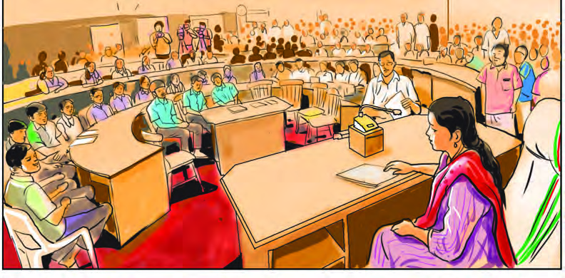

Page 85


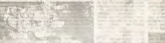

85
People, by the People
Prepare an ID Card with the names of different Local Self-
Government Institutions to which you belong.
(Grama Panchayat, Block Panchayat, District Panchayat,
Municipality/ Corporation)
The important discussions that arose and decisions taken in the Grama
Sabha / Ward Sabha of an area are given above. Here, people get directly
involved in administrative matters through Local Self-Government
institutions. Thus, the system in which the people themselves or their
elected representatives make decisions on administrative matters is
called Democracy.
A lot of developmental works must be going on in your area too. If so,
who are the authorities that discuss and decide on such developmental
activities?
“Democracy is the government of the
people, by the people, for the people”
- Abraham Lincoln
“My notion of democracy is that
under it the weakest should have
the same opportunity as the strongest”
-Mahatma Gandhi
Local Self-Government Institutions
The Local Self-Government Institutions include the Three-tier Panchayat
systems such as Grama Panchayat, Block Panchayat and District
Panchayat in rural areas and also Municipalities and Corporations in
urban areas.
Service of doctors will
be ensured every day at
Primary Health Centres:
Panchayat President
The councillor assured that the
proposals raised in the ward assembly
would be considered on priority basis
Complete Electrification;
Announcement soon
The problem of garbage on the roadside; people
demand immediate installation of CCTV cameras
The Panchayat intervened;
Solution to shortage of drinking
water
Page 86
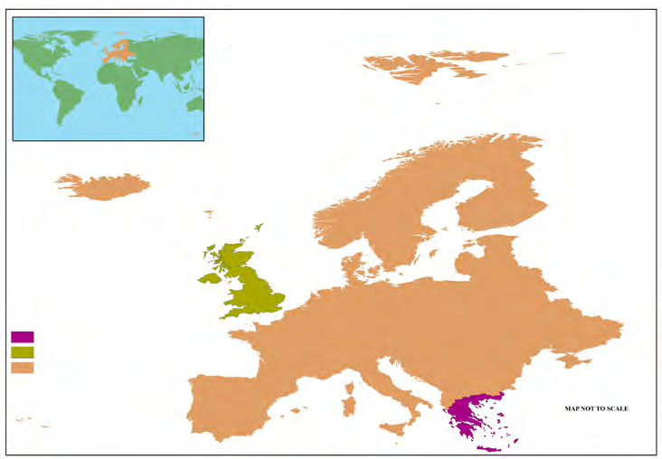
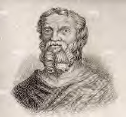

86
Social Science Class V
Have you noticed the map of Europe given above. Write down the two
countries which are marked as A and B in the outline map.
A
........................................
B
........................................
These countries have special features with regard to the origin of
democracy. Shall we examine them?
The earlier form of Democracy emerged at Athens in Greece. Although all classes
of the population were not included in the decision-making processes of public
affairs, Athens played a crucial role in shaping the concept of Democracy.
Today’s concept of democracy started in England which is part of the United
Kingdom. The systems of election, representative government and parliament
were all formed in England.
Find more details about Greece and England with the help of your
teacher.
The term Democracy was first used by the ancient
Greek historian Herodotus. The word Democracy
is derived from the Greek words demos (people)
and kratos (power or rule) which means Power of People
or Rule of People.
Greece
Index
Europe
U.K. of Great Britain and Northern Ireland
Europe
A
B
Map not to scale
In Search of Roots of Democracy
Page 87


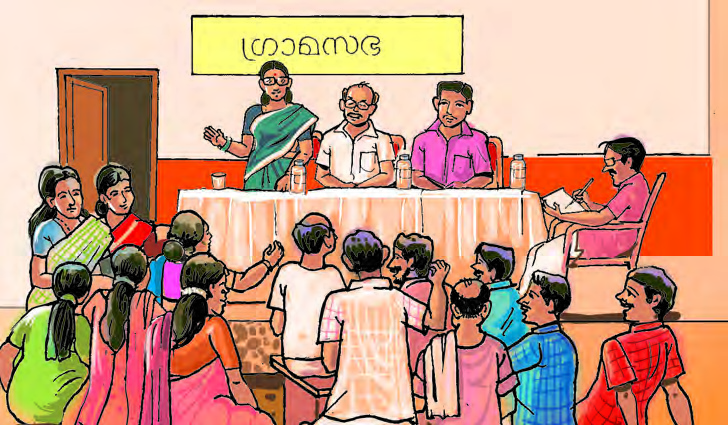
87
People, by the People
Two Types of Democracy
In the Grama Sabha, people get chance to express their opinion directly
on administrative matters and participate in the decision-making
process.
What are Grama Sabhas?
Grama Sabhas are platforms where all the people get a chance to
participate and take decisions in the administrative and developmental
processes of a locality. All the people whose names are included in the
electoral roll of each ward of a Grama Panchayat are its members.
In urban areas these are known as Ward Sabhas.
Have you seen Grama Sabha/Ward Sabha meeting? What all issues
are discussed there? Who are the participants in a Grama Sabha?
Direct Democracy/ Participatory Democracy
Direct Democracy or Participatory Democracy is a form of government in which
the people participate directly in the administrative affairs. It is usually possible
in areas with a relatively less population and limited land area.
Find out more information about Grama Sabha.
•
•
Observe the picture of Grama Sabha meeting.
Traffic lights
should be installed
in our junction
Drinking water
issue should be
solved
Seeds and fertilizers
should be issued for
vegetable cultivation
Grama Sabha
Page 88


88
Social Science Class V
While the people are directly involved in the Grama Sabhas, our
representatives speak for us in the Legislative Assembly.
Can we directly participate in the proceedings of the Legislative
Assembly? Who speaks for us there?
Which is your Legislative Assembly Constituency?
……………………………………………………
Who is the Member of Legislative Assembly (MLA) of your
constituency?………………………………………………
Kerala Legislative Assembly
Kerala Legislative Assembly is the
legislative or law-making body of
the State of Kerala. Its headquarters
is in Thiruvananthapuram. Travancore
Legislative Council, established in 1888,
Sree Moolam Praja Sabha, established in
1904 and Thiru-Kochi Legislative Assembly of 1949 were the pioneers of the
Kerala Legislative Assembly. The first session of the Kerala Legislative Assembly
was held on 27 April, 1957. 27th April of every year is observed as Legislative
Assembly Day.
Observe the picture of the legislative assembly
Vocational training
centres should be
established in every
Panchayat of my
Assembly Constituency
Page 89

89
People, by the People
Indirect Democracy / Representative Democracy
Indirect Democracy or Representative Democracy is a form of Democracy in
which representatives who are elected by the people rule on behalf of the people.
In countries with a large population and geographical area like India, the practical
way of governance is representative democracy.
Complete the table by comparing direct democracy and indirect
democracy.
Direct Democracy
Indirect Democracy
•
Possible in less populated
countries
•
•
•
Exists in countries with a
huge population
•
•
•
Let’s find out more countries.
•
•
•
•
India is the largest democratic
country in the world
Democratic rule comes to an
end in Afghanistan
Participatory Democracy still
prevails in Switzerland
In Saudi Arabia new king
sworn in
Look at the headlines given above. From these, find out the countries that
have a democratic system of government. Add the names of more democratic
countries to the list.
Page 90

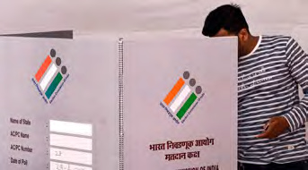
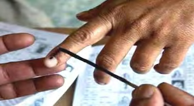
90
Social Science Class V
The supreme power
belongs to the people
Free and Fair
elections
An Opposition helping
and improving the
government through
constructive criticism
The rule of law
ensures equality
before law.
Independent media
that help to connect
the people and the
government
An Independent and
Impartial Judiciary
Democracy:
Characteristics
Organise a discussion in your class on the characteristics of a
Democratic system of government.
Through Elections
Look at the images given which are related to election.
Have you got a chance to cast your vote in an election? How are votes
cast in School Parliament elections? Your parents cast their votes in
general elections. Don't they?
Page 91


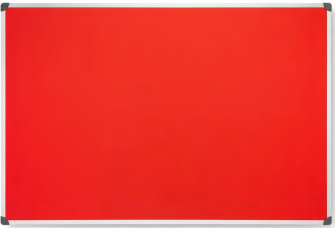
91
People, by the People
Why didn’t you get a chance to vote in the general election?
Can anyone who completes 18 years of age cast vote?
Universal Adult Franchise
Universal Adult Franchise is the right to vote in elections for everyone who has
reached a certain age without any discrimination. Until 1989, the minimum age
of the voter in India was 21 years. Now, it is 18 years.
Last date for submission of nomination
July 31
upto 04 pm
Date of verification and scrutiny of
nomination
August 3
12 pm
Date of withdrawal of nomination
August 4
upto 04 pm
Date of Publication of final list of
candidates
August 7
10 am
Date of Polling
August 9
From 11 am to 1 pm
Counting of votes and declaration of
results
August 9
2 pm
The first meeting of the School Parliament
August 10
2pm
What bits of information are given on the notice board related to school
parliament elections. List them.
•
Election notification
•
•
•
•
•
Election: Various Stages
School Parliament Model Election Notification
Page 92

92
Social Science Class V
Elections in our country also go through various stages like this. Which
are they? Take a look.
Why do We Conduct Elections?
Election is the process through which rulers are elected in a democratic
system. Apart from this, elections perform some other functions.
Election Campaign
Polling
Counting of Votes and Declaration
of Results
Election Notification
Submission of Nomination
Scrutiny of Nomination
Withdrawal of Nomination
Appointment of Election Officers
Various stages
of Election
Governments
are formed
All are
represented
Rulers are
moulded
Strengthens
democracy
Educates
voters
Functions of Elections
Organise a model election in the class including various stages of
election.
Page 93

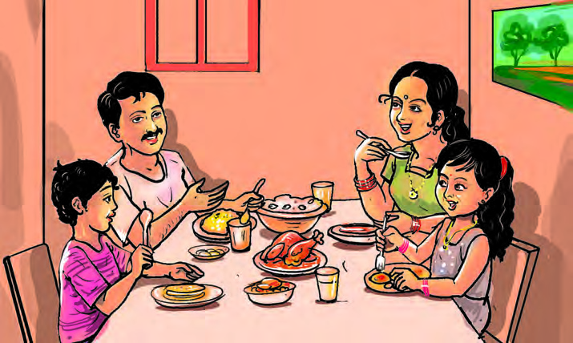
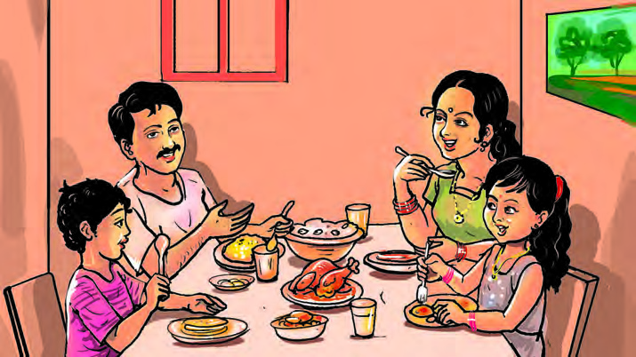
93
People, by the People
Election Commission of India
The duty of the Election
Commission of India is to conduct
free and fair elections to the office
of the President, Vice President
and the Members of the Parliament and State
Legislatures. It is the President of India who
appoints the three members of Election
Commission of India including the Chief Election Commissioner.
Prepare strips containing information on different functions of
election and keep them in a box. Divide the class into groups and
choose a representative from each group. Each representative should
select a strip from the box and lead a group discussion on the
prescribed function of election. Then, develop a discussion paper and
present it in the class.
Democracy as a Way of Life
I also like to go
to Munnar
I am also ready
if everyone
agrees.
Yes, that’s right.
There is plenty for
sight-seeing
I want to go to
Munnar.
Yes.
Let’s go
Yes we can.
Where to?
Shall we go for
a trip during
this Christmas
vacation?
Shall we go to
Ernakulam?
Page 94
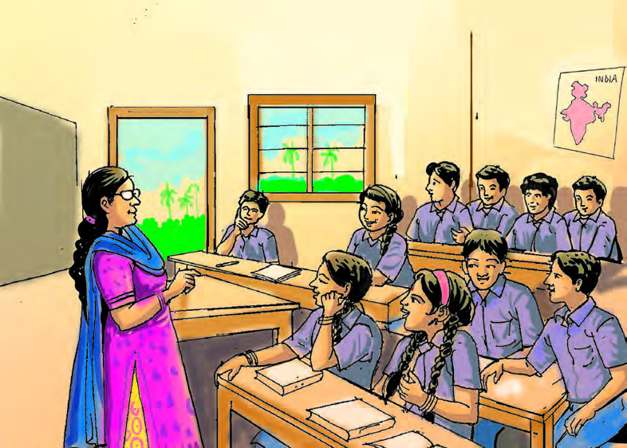
94
Social Science Class V
Water theme
park
Thekkady
Museum
Children, it is time for
the study tour this year.
Where do you wish to
go?
Well, then let’s
organise a trip covering all
these places
Okay, we’re
ready
Democracy is possible in the family when decisions are taken by considering
everyone’s opinions.
Have you observed the pictures? Who is the decision maker here?
Democracy in School
Page 95
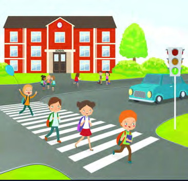
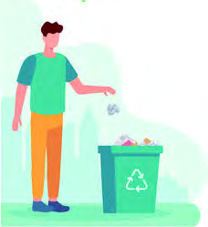
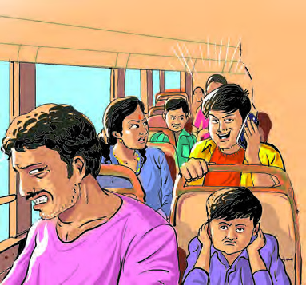
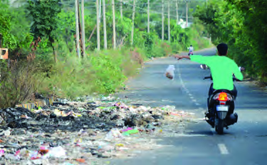
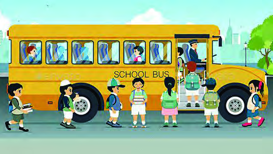
95
People, by the People
Democracy in Public Places
Different situations in life are shown in the pictures below. In which
situation do we see democracy being put into practice?
Look at the pictures given above. To what extent do these situations
play a role in ensuring democracy? Discuss.
Democracy in schools is ensured when children’s opinions and interests are taken
into consideration and equal opportunities and equality are ensured to them.
Keeping public places clean, respecting the interests of others, and obeying public
rules are all necessary for leading a democratic lifestyle.
Page 96
96
Social Science Class V
Extended Activities
Other than the election of the rulers, democracy needs to be practiced in
all walks of life. The chief characteristics of a democratic society is that it
provides the freedom to choose one's food, clothing, profession and also
the liberty to express one's opinions. In addition to that, democracy
becomes meaningful when equal status, equal opportunity and equal
right to resources are also provided to all.
My opinion is considered while making
important decisions at home.
Yes/No
Public places and public vehicles are kept clean.
Yes/No
I give my opinion when the destination for a
study tour from school is chosen.
Yes/No
While travelling, I don’t behave in a manner that
causes difficulty to fellow passengers.
Yes/No
I follow traffic rules.
Yes/No
I have the freedom to study subject that I like.
Yes/No
I do not throw garbage in public places
Yes/No
The extend of Democracy.
Complete the check list given below. Find out how far do we
follow a democratic way of life.
1. Prepare a digital album by collecting pictures related to election.
2. With the help of the teacher, prepare a questionnaire for interviewing the
Ward Member/Councillor and MLA to understand more about Grama
Sabha/Ward Sabha and Assembly. Organise visits to Grama Sabha/Ward
Sabha and Legislative Assembly.
3. Organise a seminar based on the characteristics of democracy.
4. Is the age limit to cast vote 18, in all countries? Find out the minimum
age to vote in different countries..
5. Make a prototype Electronic Voting Machine (EVM) in groups and
demonstrate it in Social Science Lab.
Page 97
.................................................................................................................................................................
.................................................................................................................................................................
.................................................................................................................................................................
.................................................................................................................................................................
.................................................................................................................................................................
.................................................................................................................................................................
.................................................................................................................................................................
.................................................................................................................................................................
.................................................................................................................................................................
.................................................................................................................................................................
.................................................................................................................................................................
.................................................................................................................................................................
.................................................................................................................................................................
.................................................................................................................................................................
.................................................................................................................................................................
.................................................................................................................................................................
.................................................................................................................................................................
.................................................................................................................................................................
.................................................................................................................................................................
.................................................................................................................................................................
.................................................................................................................................................................
.................................................................................................................................................................
.................................................................................................................................................................
.................................................................................................................................................................
Notes
Page 98
.................................................................................................................................................................
.................................................................................................................................................................
.................................................................................................................................................................
.................................................................................................................................................................
.................................................................................................................................................................
.................................................................................................................................................................
.................................................................................................................................................................
.................................................................................................................................................................
.................................................................................................................................................................
.................................................................................................................................................................
.................................................................................................................................................................
.................................................................................................................................................................
.................................................................................................................................................................
.................................................................................................................................................................
.................................................................................................................................................................
.................................................................................................................................................................
.................................................................................................................................................................
.................................................................................................................................................................
.................................................................................................................................................................
.................................................................................................................................................................
.................................................................................................................................................................
.................................................................................................................................................................
.................................................................................................................................................................
.................................................................................................................................................................
Notes
Page 99
.................................................................................................................................................................
.................................................................................................................................................................
.................................................................................................................................................................
.................................................................................................................................................................
.................................................................................................................................................................
.................................................................................................................................................................
.................................................................................................................................................................
.................................................................................................................................................................
.................................................................................................................................................................
.................................................................................................................................................................
.................................................................................................................................................................
.................................................................................................................................................................
.................................................................................................................................................................
.................................................................................................................................................................
.................................................................................................................................................................
.................................................................................................................................................................
.................................................................................................................................................................
.................................................................................................................................................................
.................................................................................................................................................................
.................................................................................................................................................................
.................................................................................................................................................................
.................................................................................................................................................................
.................................................................................................................................................................
.................................................................................................................................................................
Notes
Page 100
.................................................................................................................................................................
.................................................................................................................................................................
.................................................................................................................................................................
.................................................................................................................................................................
.................................................................................................................................................................
.................................................................................................................................................................
.................................................................................................................................................................
.................................................................................................................................................................
.................................................................................................................................................................
.................................................................................................................................................................
.................................................................................................................................................................
.................................................................................................................................................................
.................................................................................................................................................................
.................................................................................................................................................................
.................................................................................................................................................................
.................................................................................................................................................................
.................................................................................................................................................................
.................................................................................................................................................................
.................................................................................................................................................................
.................................................................................................................................................................
.................................................................................................................................................................
.................................................................................................................................................................
.................................................................................................................................................................
.................................................................................................................................................................
Notes
Page 101
.................................................................................................................................................................
.................................................................................................................................................................
.................................................................................................................................................................
.................................................................................................................................................................
.................................................................................................................................................................
.................................................................................................................................................................
.................................................................................................................................................................
.................................................................................................................................................................
.................................................................................................................................................................
.................................................................................................................................................................
.................................................................................................................................................................
.................................................................................................................................................................
.................................................................................................................................................................
.................................................................................................................................................................
.................................................................................................................................................................
.................................................................................................................................................................
.................................................................................................................................................................
.................................................................................................................................................................
.................................................................................................................................................................
.................................................................................................................................................................
.................................................................................................................................................................
.................................................................................................................................................................
.................................................................................................................................................................
.................................................................................................................................................................
Notes
Page 102
.................................................................................................................................................................
.................................................................................................................................................................
.................................................................................................................................................................
.................................................................................................................................................................
.................................................................................................................................................................
.................................................................................................................................................................
.................................................................................................................................................................
.................................................................................................................................................................
.................................................................................................................................................................
.................................................................................................................................................................
.................................................................................................................................................................
.................................................................................................................................................................
.................................................................................................................................................................
.................................................................................................................................................................
.................................................................................................................................................................
.................................................................................................................................................................
.................................................................................................................................................................
.................................................................................................................................................................
.................................................................................................................................................................
.................................................................................................................................................................
.................................................................................................................................................................
.................................................................................................................................................................
.................................................................................................................................................................
.................................................................................................................................................................
Notes
Page 103
Page 104